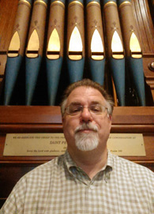

Services
I have worked as a church musician for 30+ years in Episcopal and Roman Catholic churches in Rhode Island, Massachusetts, Connecticut, New Jersey and Alabama.
Musical leadership and education have been my strongest attributes in my jobs whether that was as an organist leading a congregation or directing parish choirs. With experience directing children and adults, parishes have experienced nearly seamless transitions and, when breaks have been abrupt, quick, enthusiastic resumption of normal choral activity.
Graduating with degrees in organ performance from the Hartt School of Music, University of Hartford (Bachelor of Music) and organ and church music from the Yale School of Music and the Institute of Sacred Music as well as many years of experience, I am comfortable with many varieties and styles of music.
In 2003, I began focusing on the interim niche of church work. Looking at the model of interim clergy, I discovered that very often poor or unsuccessful matches between church and musician were made when decisions were made too rapidly because of imminent need. By offering to a church a period to mourn (if needed), discern their needs and do a better job of preparing and promoting a job description allows them to call a musician better suited. I bring my experience and education as a resource to help parishes move to the next stage in their musical life. I also discovered that I truly enjoyed the challenges this sort of life presents as well as the joys of meeting new people and working with them.
Available services include
Musical
- Organist
- Choir Director
- Music Director
Consultation
- Defining Needs and Goals
- Writing Job Descriptions, Advertisements, Contacts
- Assistance with Interviews and Auditions